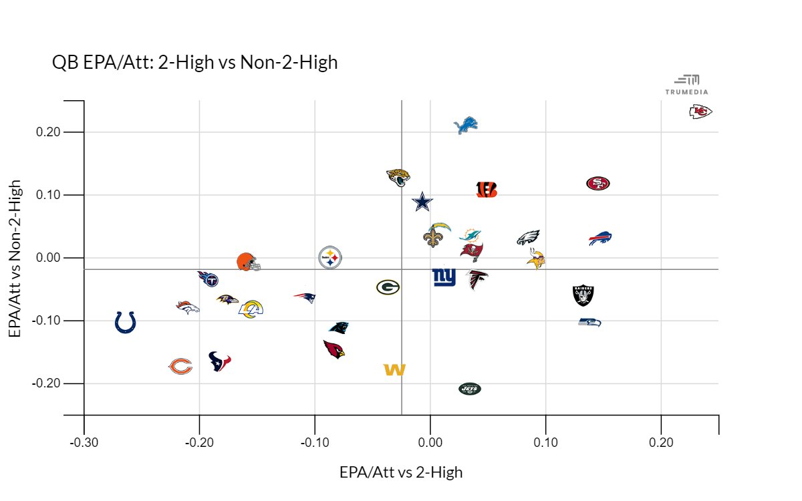

Two High: Why didn’t it stop Mahomes?
By Noe Leon | April 16, 2023

In the last three years we have seen the rise of the two high safety coverages popularized by former Denver Broncos Head Coach, Vic Fangio, which took the league by storm and earned many of his assistant coaches promotions and even a head coaching job. The names of the Vic Fangio coaching tree include defensive coordinators Joe Barry, Joe Woods, Ed Donatell, Sean Desai, and Chargers head coach Brandon Staley. Two of these defensive coordinators have been fired since the conclusion of the 2022 NFL season (Fangio was fired in 2021). In this article, I will dig into why there isn’t as much success from these coaches as one would have expected when two high safety coverages were all the hype just a short time ago.
Here is each coaches rankings in overall defense and run defense:
- Joe Barry (Packers): 20th and 31st
- Joe Woods (Browns): 23rd and 28th
- Ed Donnatell (Vikings): 27th and 19th
- Sean Desai (Seahawks): 21st and 25th
- Brandon Staley: 16th and 29th
The key takeaway from these numbers tell us how poorly these teams that run two high safety coverages fared on the defensive side of the ball especially against the run. The reason for this lies in what this defensive coverage is supposed to defend against and what its weaknesses are. It’s designed to be effective against playmaker quarterbacks such as Patrick Mahomes, Josh Allen, and Russell Wilson because more personnel drop into coverage, allowing the defense to constantly switch up its look and confuse the quarterbacks, who end up making more reads and more prone to mistakes. The upside of two high safety coverages is that it prevents big plays from occurring and had massive success in years prior. Brandon Staley was able to create the number one defense in the league with the Rams in 2020 and Vic Fangio was consistently leading top 10 defenses before his firing in 2021. However, recently, two high safety coverages have been on the decline for two reasons - the league's ability to adapt to the coverage scheme and the specific personnel required to execute this defensive scheme.
The league was able to adapt to two high safety defenses rather quickly because teams recognized its weakness against the run and its emphasis on defending against big plays. The league saw its highest rushing yards per game since 1987 and had the highest ever recorded rushing yards per carry in league history. This is despite the fact that scoring once again decreased from last year by over one point. This trend shows that teams were able to recognize that running the ball was more effective against this type of defensive scheme and while scoring went down,teams were happy to run the ball more if it meant more wins. Teams also took advantage of the fact that a two high safety coverage meant that underneath routes were left open due to the lack of press coverage from defensive backs. This trend led to teams with more pocket passing quarterbacks to excel against 2-high coverages such as the Raiders, the 49ers, the Vikings and others.
The other fault lay in the specific personnel teams need in their defense to be able to execute a two high safety coverage properly. These defenses are built around the concept of versatility. Defensive players need to be ready to switch assignments at a moment's notice leaving them to rely almost purely on their instincts which naturally is difficult to do consistently at a high level of play. This limits the effectiveness of specialists who excel in one area of the game such as run stopping, zone coverage, or pass rushing because they are now forced to do assignments they aren’t suited for. You can’t expect to have much success this way especially in the pass rush game as we see teams such as the chargers, seahawks, and vikings ranked in the bottom 6 teams in terms of pass rush win rates. To have success with this offense you need a combination of players that can win consistently in the pass rush without the help of the rest of the defense and defensive backs that are highly touted in the run game. The best example of a team that had this combination was the 2020 Los Angeles Rams whose defense was headed by Brandon Staley. The Rams had Aaron Donald whose 2020 pass rush win rate is the best in the past 5 seasons by any defensive lineman other than himself. They also relied on Jalen Ramsey to lead the defensive backs as he was first team all pro that season and was graded as one of the best run defenders among cornerbacks by PFF consistently since he was drafted in 2016. A team with players of this caliber is hard to build and is another reason why it is difficult to run a defense this way and be successful year in and year out. While two high safety schemes have failed to dominate the NFL in the way we expected it doesn’t mean that they don't succeed in certain facets of the game. The drop back EPA of the Chargers, Browns, Packers, and Seahawks ranked 10th, 12th, 13th, and 19th respectively. The passing defenses of these teams were much improved in comparison to their run defense. Some of these coaches also were able to adapt as the season went on and stopped relying so much on these coverages. The Chargers were ranked 5th best in terms of Defensive EPA from week 12-18 and most of the other aforementioned teams also saw a slight improvement in their defensive EPA as the season progressed. The two high safety defensive coverages excel at what they are supposed to excel at, but over reliance on these safety schemes only spells disaster for defensive coordinators. As the league moves forward in its never ending quest to come up with defensive measures to stop the most dynamic offenses we’ve seen in NFL history, the two high coverage concept will certainly be used, but it will not be the ultimate answer to creating the best defense possible rather it will just be another scheme that defensive coordinators are expected to know to counter certain offenses.